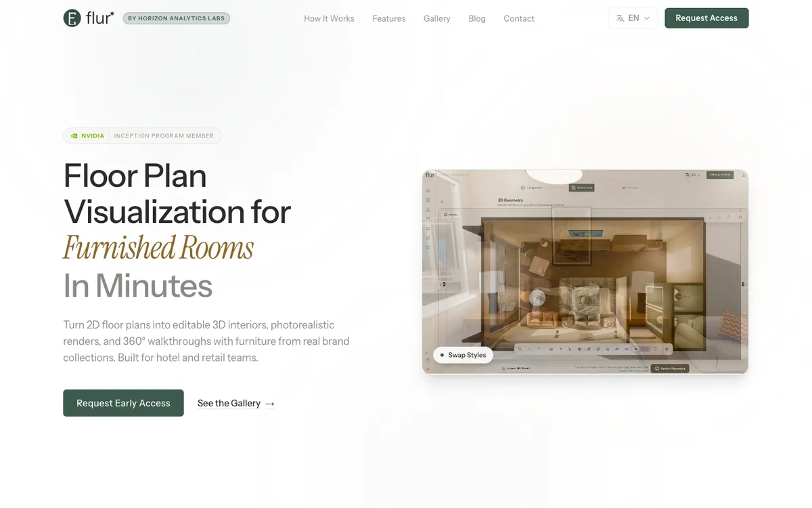

AI product
Flur
From a floorplan to a furnished space.

Hotels and retail teams need to visualise interiors using real furniture collections. Flur turns 2D floorplans into furnished interiors and 360° panoramas.
My contribution: Building the floorplan understanding pipeline, synthetic datasets, vision-model fine-tuning, golden-fixture evaluations, and rendering workflow.